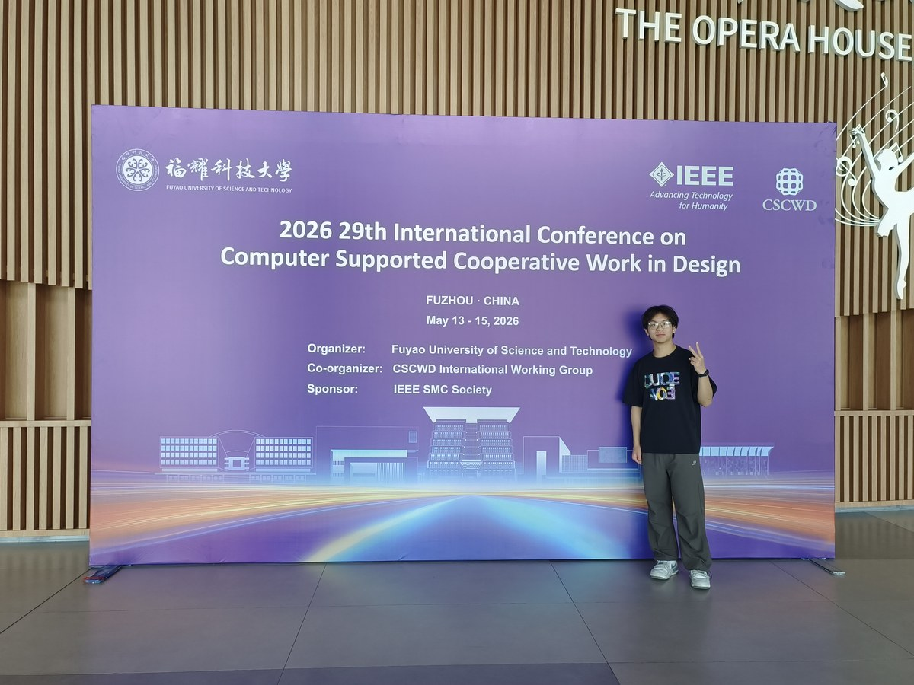
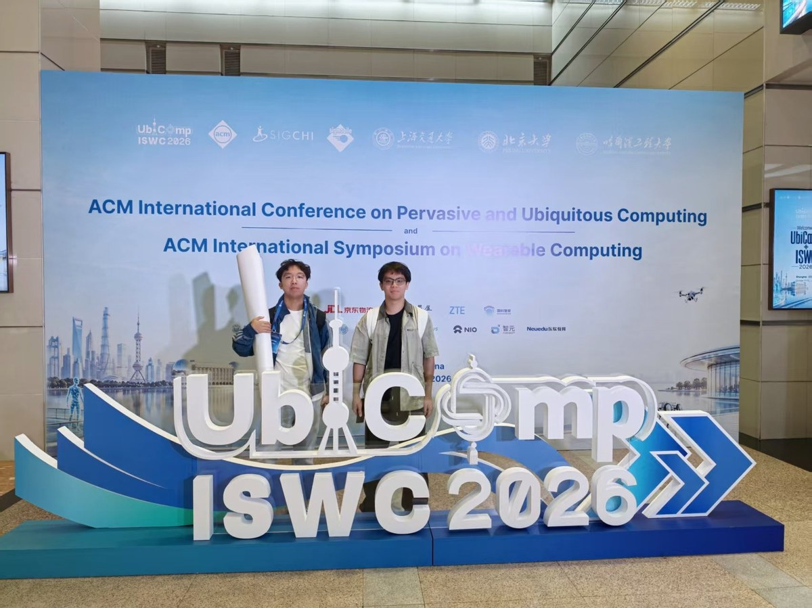

Zijian Lu
陆梓健
AgentSpeechPerception
Communication Engineering undergraduate at NJUPT.
Co-founder & Algorithm Lead, Shouyi Technology.
ML · LLMs · Representation Learning
News
Research
Reusable, verifiable agents.
Reusable skills, context allocation, and evidence checks for reliable agent actions.
Related papers ↗Papers
9 of 9 works
Details
Allocating a coding agent's context by canonical code objects while retaining fragments that add useful local semantics.
Details
Checking whether current telemetry still supports a proposed wireless-network action before it is executed.
Details
Studying how stale verbal priors shape visual representations, and separating identifiable subspaces from effective behavioral interventions.
Earlier title: Prior Directions: Why GUI Grounding Gets Locked in the Past
Details
Using repeatable geometric probes and cross-view evidence to control which OCR outputs a vision-language model releases.
Earlier title: From Plausibility to Verifiability: Risk-Controlled Generative OCR with Vision-Language Models
Details
Bringing integrated sensing and communication into urban drone-delivery system design and edge realization.
Vol. 9, no. 3, pp. 81–86
No papers match this search.
Projects
Shouyi Technology · May 2026–present
Forget-Me-Not 勿忘我
Speech-based cognitive screening for older adults, from telephone conversations to community pilots.
Open source
ContractSkill
Repairable skills for web agents.
ResearchOS
An autonomous research agent.
Maintenance Assistant
Multimodal RAG for maintenance on LoongArch Kylin.
In the field


About
SEP 2024 — PRESENT · EXPECTED 2028
Nanjing University of Posts and Telecommunications
B.Eng. candidate, Communication Engineering
School of Communication and Information Engineering
MICS Lab / Xindu team
Undergraduate researcher; speech-track recruitment contact ↗.
- National Third Prize
China Software Cup - National Third Prize · Maker Track
China College Students Service Outsourcing Innovation and Entrepreneurship Competition - Bronze Award
NJUPT Challenge Cup Entrepreneurship Competition - Second-Class University Scholarship
Nanjing University of Posts and Telecommunications